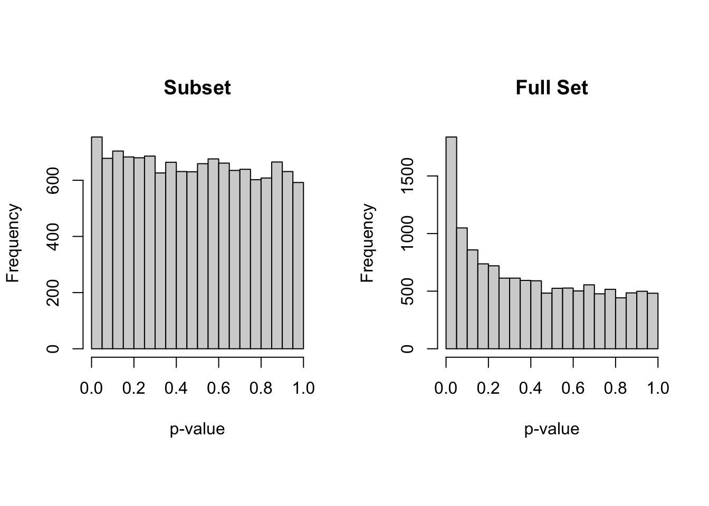
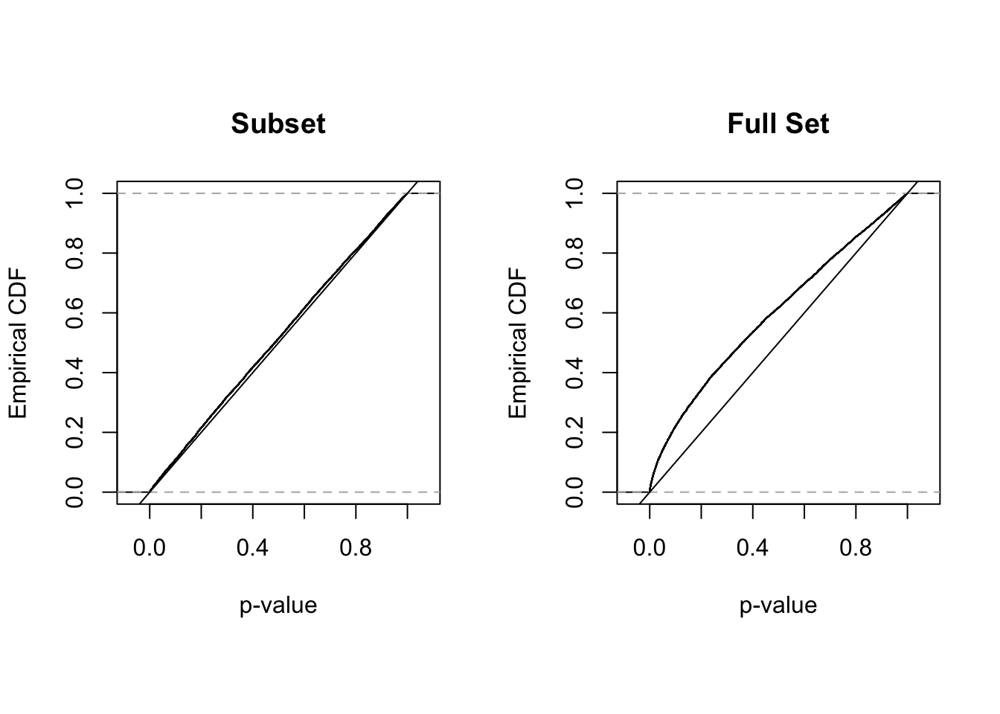
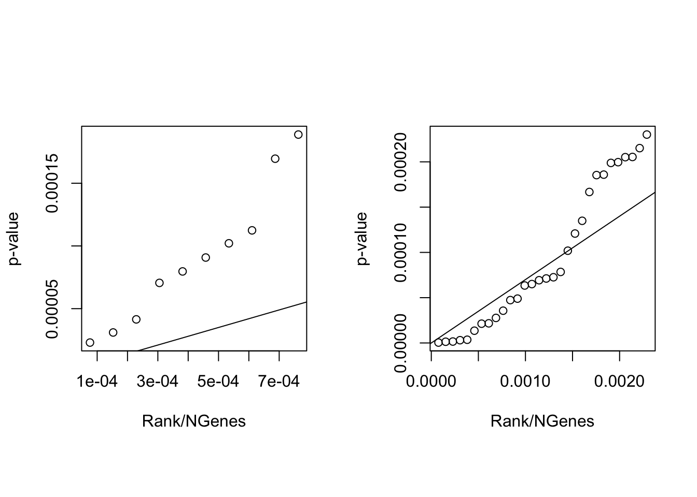
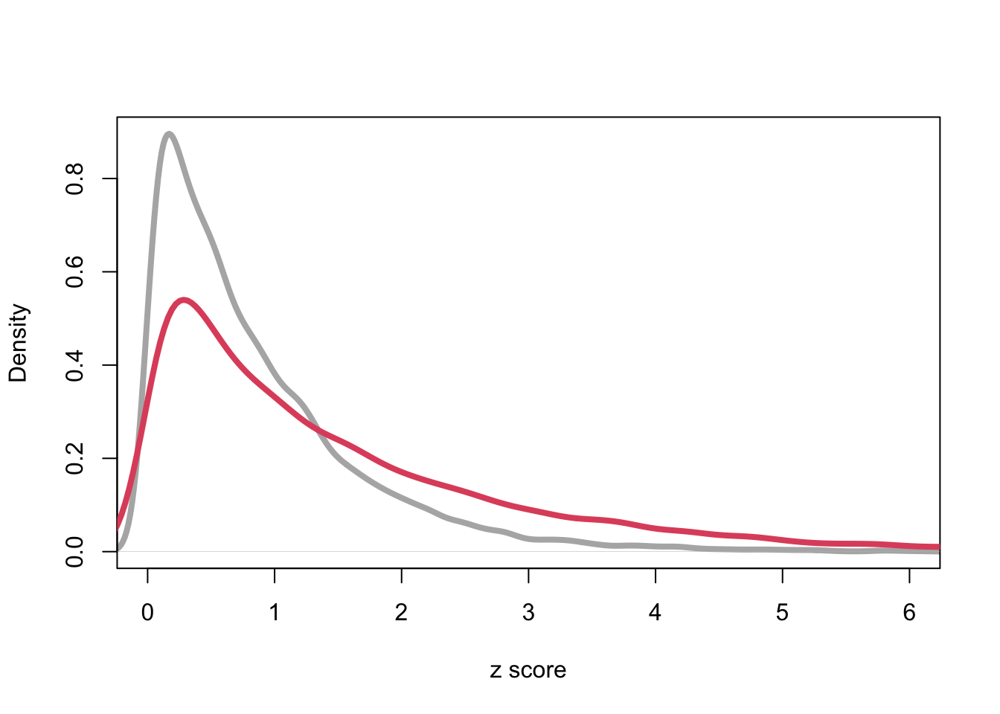

library(curatedOvarianData)
library(ROCR)
data(TCGA_eset)
XX = as.matrix(cbind(exprs(TCGA_eset)))
YY = 1 * as.vector(pData(TCGA_eset)[,"debulking"]=="optimal")
XX = XX[,!is.na(YY)];
YY = YY[!is.na(YY)]
XXX = XX
YYY = YY
# subset
subs = 1:100
XX = XX[,subs]; YY = YY[subs]Lecture 10: False Discovery Rates
Multiple Testing
Intro
In our previous discussion we played with various approaches for discovering sets of promising biomarkers. How can we assess the quality of the discovery process and results? The most basic version of this assessment is based on assuming there is a binary truth at the gene level, representing biomarker with and without biological signal, and that the discovery process is about revealing this vector of binary labels. Formally, this is a multiple hypothesis testing problem.
The literature of multiple testing is enormously big. A favorite of mine is @Tukey:1991ga
Setting and notation:
\(g = 1, \ldots, G\) genomic features, for example genes in gene-level analysis of expression data
\(i = 1, \ldots, I\) subjects in the discovery sample
\(x_{1g}, \ldots, x_{Ig}\) observed quantitative level of the expression of gene \(g\) in the \(I\) subjects
\(y_{1}, \ldots, y_{I}\) binary class labels for the \(I\) subjects
\(z_g = z_g (x_{1g}, \ldots, x_{Ig}, y_{1}, \ldots, y_{I})\) a statistic used to select, or “discover” biomarkers. For example the absolute value of a t-statistic, the AUC or the fold change. We assume that larger values of the statistic are indicative of the signal we try to discover.
\(H_{0g}\) is the event that for gene \(g\) there is no signal, that is if the two classes have identical distributions for the expression \(x\).
\(p_g = P ( z_g > c | H_{0g})\) p-value.
Data
Continuous genomic feature: gene expression microarray readout in the TCGA study
Binary phenotype (optimal surgical debulking)
Distribution of p-values
We next create two sets of summary scores. ScoresSub yields the four metrics computed on the first 100 patients, while ScoresAll gives the four metrics computed on the entire set of patients.
source("RScripts/Scores.R")
ScoresSub = CompScores(XX,YY)
ScoresAll = CompScores(XXX,YYY)A useful place to start a discussion about multiple testing are the histograms of the p-values obtained with the t-test.
par(mfrow = c(1, 2), pty = "s")
hist(exp(-ScoresSub[,"nlpvalueT"]),
main="Subset",xlab="p-value")
hist(exp(-ScoresAll[,"nlpvalueT"]),
main="Full Set",xlab="p-value")
par(mfrow = c(1, 2), pty = "s")
plot(ecdf(exp(-ScoresSub[,"nlpvalueT"])),
main="Subset",xlab="p-value",ylab="Empirical CDF"); abline(0,1)
plot(ecdf(exp(-ScoresAll[,"nlpvalueT"])),
main="Full Set",xlab="p-value",ylab="Empirical CDF" ); abline(0,1)
Higher Criticism
Review: if the null hypothesis is correct, the sampling distribution of the p-value is uniform in (0,1). “Sampling distribution” refers to hypothetical repetitions of the same experiment, in this case under the null.
These histograms show a single experiment. The distribution arises from variation across biomarkers. Can we still learn something useful about the frequentist multiple testing problem?
How would you test for the “global null”, that is the scenario where each and every biomarker is independent of the debulking status?
Hint: @Donoho2015ss
False Discovery Rates
A simple way to think about the discovery process is to focus on a list of promising candidates (or “discoveries”), as we did in our previous lecture. If we know the true data generating model for each gene, we could, for example, look at this table:
It is common to study the proportion \(R_0/R\) of discoveries for which the true data generating model is null.
Note
\(R_0/R\) is unknown. It depends on both the data and the parameter (the vector of indicators of whether eagh gene is null)
- When is \(R_0/R\) an appropriate quantity to focus on?
This parameter can be estimated from a couple of different perspectives. If you are interested in evaluating the list generating process you may be interested in a frequentist expectation. Bounds can be obtained using methods like Benjamini-Hochberg (see below). If your focus is on the actual list rather than the procedure, Bayesian estimates may be your choice.
We review many of the connections here: @muel:parm:rice:2007
Frequentist Definition of FDR
The Benjamini-Hochberg Algorithm
rankedPValuesSub = sort( exp(-ScoresSub[,"nlpvalueT"]) )
rankedPValuesAll = sort( exp(-ScoresAll[,"nlpvalueT"]) )
par(mfrow = c(1, 2), pty = "s")
plot( (1:10)/length(rankedPValuesSub), rankedPValuesSub[1:10],
xlab="Rank/NGenes", ylab="p-value")
abline(0,.07)
plot( (1:30)/length(rankedPValuesAll), rankedPValuesAll[1:30],
xlab="Rank/NGenes", ylab="p-value" )
abline(0,.07)
Note
How would you comment these results?
Empirical Null Distribtution of Scores
It is simple to permute the labels of the subjects and recompute the scores. After permutation, for each gene, the link between expression and debulking has been broken. Discoveries are now random. We will look at a single permutation for illustration. As the number of features is large a single permutation can give reasonable indications. In a real application we may want to use multiple permutation and average over the inferential results, particularly if we are interested in events with small probability.
set.seed(1)
YYNull = YY[ sample(1:length(YY)) ]
ScoresSubNull = CompScores(XX,YYNull)
set.seed(1)
YYYNull = YYY[ sample(1:length(YYY)) ]
ScoresAllNull = CompScores(XXX,YYYNull)acut = .6
aucDiscAll = ScoresAll[,"AUC"]>acut
aucDiscAllNull = ScoresAllNull[,"AUC"]>acut
table(aucDiscAll)aucDiscAll
FALSE TRUE
13076 28 table(aucDiscAllNull)aucDiscAllNull
FALSE TRUE
13103 1
Note
is it correct to conclude that of the 28 discovery, only 1 is likely false?
what is 1/28 and estimate of?
Empirical Bayes estimate of the false discovery rate:
Empirical Bayes FDR makes the 1/28 story a bit more formal. The thinking is now conditional on the observed set of data, specifically the observed set of scores, the \(z\)’s. The \(z\)’s can coincide with the p-values, but this logic does not require p-values, so the p-value calculation adds an unnecessary step.
Define \(F(z) = P ( z_g \leq z)\) to the the true marginal distribution of the scores, and \(\bar F(z) = 1 - F(z) = P ( z_g > z)\). Now restrict attention to the genes whose true generating model is null and let \(\bar F_0(z) = 1 - F_0(z) = P ( z_g > z | H_{og})\). In a genemo where \(p_A\) genes are from some alternative (each gene can have its own!) and the remaining \(1-p_A\) are from the same null, the unknown proportion of false discoveries can be rewritten as:
\[ \frac{R_0}{R} = \frac{ (1-p_A) * \bar F_0 (z)}{(1-p_A) * \bar F_0 (z) + p_A \bar F_A (z) } =\frac{ (1-p_A) \bar F_0 (z)}{ \bar F (z) } \approx\frac{ \bar F_0 (z)}{ \bar F (z) } \]
In EB, the denominator, for any given cutoff, can be estimated empirically from the geneome-wide distribution of \(z_g\)’s. Just don’t pick the cutoff so that the list is empty.
The numerator is a bit trickier. If the disctribution of the \(z\)’s under the null is known (as is the case for example with \(z\)-scores for which normality can be trusted, \(\bar F_0 (z)\) can be estimated that way. If not, one approach is to use the geneome-wide distribution of \(z_g\)’s after a permutation that mimics the global null. \(p_A\) is not identifiable w/out parametric / smoothness assumptions on the distributions of the \(z\)’s. A surprisingly useful approximation is \(1-p_A = 1\), which gives a conservative bounds to EF FDR, but often a reasonably realistic one.
Note
- tie this back to the 1/28 story
Empirical Bayes estimate of the local FDR
Let’s look at estimates of densities corresponding to \(F\) and \(F_0\). These densities are normalized to integrate to \(1\).
plot(density(ScoresAllNull[,"nlpvalueT"]),col=gray(.7),lwd=4,xlim=c(0,6),
main="",xlab="z score")
lines(density(ScoresAll[,"nlpvalueT"]),col=2,lwd=4)
Note
- does this figure suggests a quick and dirty way of estimating \(1-p_A\)? Think through the assumptions would would be making.
This figure does suggest a way of evaluating the false discovery rate specifically for discoveries at and around a score of \(z\). Imagine you have estimates \(\hat f\) and \(\hat f_0\).
\[ \text{fdr}(z) = \frac{ (1-\hat p_A) * \hat f_0 (z)}{(1-\hat p_A) * \hat f_0 (z) + \hat p_A f_A (z) } =\frac{ (1-\hat p_A) \hat f_0 (z)}{ \hat f (z) } \approx\frac{ \hat f_0 (z)}{ \hat f (z) } \] ### Summary
If you can trust the assumptions behind the p-value calculation, then:
else:
Addendum: Familywise Error Control
A different way of thinking about multiple testing is to control the probability of falsely rejecting any null hypothesis (Familywise Error Control).
Note
How do you decide whether FDR or FEC is a better fit for your analysis?
The Bonferroni method provides a bound to familywise error. Here is an exampe of how it works.